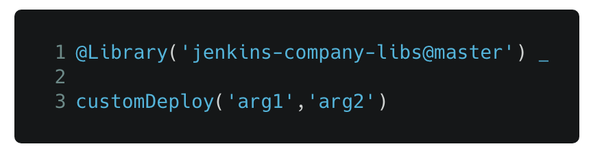

Jenkins BlueOcean
Pipeline Editor with Tuleap
Abstract
- Précurseur dans son domaine, Jenkins s’est récemment modernisé avec une forte orientation "Développeur", pour faciliter la conception et l’agilité du processus CI/CD.
- Au coeur de ces changements: l’interface graphique "Blue Ocean" et la nouvelle syntaxe de pipeline dite "Déclarative", proche du YAML ou du JSON.
- Découvrons ensemble quel gains tirer de ce ces changements lorsque l’on utilise Tuleap avec du Jenkins "moderne".
Whoami
- Damien DUPORTAL
- Training Engineer @ CloudBees
- dduportal@cloudbees.com - damien.duportal@gmail.com
- @DamienDuportal
CloudBees and the Jenkins Community
- Kohsuke Kawaguchi : Community leader and CTO at CloudBees
- Code and Releases
- CloudBees partners with the community on development
- CloudBees engineers contribute significantly to the Jenkins project
- CloudBees partners with the community on releases
- CloudBees contributes fixes back to the community
- Organizes Jenkins World and supports numerous Jenkins events
CloudBees Inc.
- We help our customers deliver software at the speed of ideas
- We Provide the Solutions that Enable Enterprises to Scale Jenkins
- Subscription based model
- CloudBees Jenkins Solutions :
- CloudBees Jenkins Enterprise
- DevOptics
</marketing>
Et vous ?
Au menu
- Le Jenkins nouveau est (déjà) arrivé !
- De Zéro à Livraison Continue en 5 minutes
- Jenkins (moderne) & Tuleap
Qui a connu ceci ?
Inspiré par mon compère Captain Igloo
Et ceci ?

1 - Le Jenkins nouveau est arrivé !
2015 - Pipeline
- "Coder" son Pipeline avec une DSL scriptée
- Fichier
Jenkinsfiledans le dépôt de code - Survit au redémarrage du Jenkins Master
2016 - Multi-Branches Pipelines
- Gestion natives des branches SCM
- Concept simple: un dossier qui "scanne" le dépôt de code
- Un "Pipeline" par branche : création/suppression automatiques
- Extension à GitHub, BitBucket : "Organization scanning"
- 1 projet Multi-Branche par dépôt de l’organisation. Automatiquement
2016 - Jenkins.io

2017 - Blue Ocean
- Une nouvelle expérience utilisateur,
orienté Dévelopeurs,
écrite en React.js
- À côté de l’interface existante :
http://jenkins/blue/
- À côté de l’interface existante :
- Pipeline : Syntaxe Déclarative
2018
- Jenkins Essentials
: Simple, Sain, À Jour, Toujours Vert
- Jenkins X
: Intégration et Déploiement Continus pour Kubernetes

- Jenkins Configuration as Code : Configuration complète avec du YAML.
2 - De Zéro à Livraison Continue…
…en 5 minutes
Démo
- Un tour dans Blue Ocean
- Notre premier Pipeline
- Un Pipeline dans la vraie vie
3 - Jenkins “moderne” et Tuleap
Court Terme
"Out of the Box"
- "Out of the Box" : MultiBranch Pipeline vers un dépôt Git, en SSH.
- Webhooks configurés en suivant la documentation du
plugin Git
:
curl ${JENKINS_URL}/git/notifyCommit?url=<GIT URL>
- "Jenkins Pipeline Shared Library" - réutiliser votre code Pipeline :
vars/customDeploy.groovydans le Git "jenkins-company-libs"
Long Terme
"I had a dream"
- Plugin natif Tuleap :
- Scannage d’organisation avec gestion complète des Pull Requests et des webhooks
- SSO/délégation de sécurité
- Configuration as Code :
- Tuleap URL + Token dans un fichier YAML
version du plugin Jenkins Tuleap - Démarrer Jenkins : Auto-configuration et auto-mise à jour !
- Tuleap URL + Token dans un fichier YAML
Merci !
Des questions ?